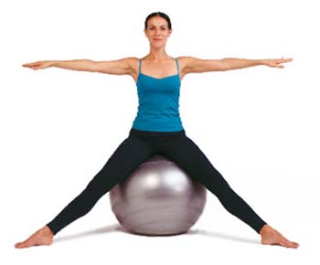

Pilates i Džej Lo za svakoga
U životu prosečne ženske koja drži do fizičke utreniranosti, postoji prirodan sled: Prvo ideš na aerobik, onda pređeš na pilates ili jogu, a kasnije na duboko disanje ili rekreaciju za žene.
Ok, naravno da postoje i drugi sportovi. Ali ovo je mainstream. Smatram.
Sinteza informacija sa raznih web sajtova kaže da je pilates dobar zbog:
- Zdrave kičme - Stvara se više prostora između pršljenova, pa se izgleda više, mobilniji smo i graciozniji
- Nema pritiska na zglobove, posebno kolena, kao npr. kod aerobika
-Povećava se mentalna i emocionalna stabilnost
-Bolja je cirkulacija, ravnoteža, koordinacija, izdužuju se mišići, smanjuje tenzija..
S druge (negativne) strane, velika je verovatnoća da će se desiti bar nešto od ovoga:
- Vežbaće se u prašnjavim, malim, hladnim, pretoplim ili neprovetrenim prostorijama. Velike su šanse da će biti gužva. Nekad će vam naložiti da vežbate u parovima, pa ćete nepoznatoj cici biti way too much u ličnom prostoru. Ili ona vama.
Neke vežbe su glupe, jer su izmišljene izmišljanja radi. Tipa: Potkolenicom drži loptu dok se suprotnom rukom držiš za nožni palac, a gledaš ukoso gore ka ruci ispruženoj ispred.
Ako vežbaš tri puta nedeljno, a baviš se još nečime u životu, fakat je da nećeš imati dovoljno vremena.
O odlasku po kiši i snegu da i ne pričam.
I na kraju, ima taj efekat Džej Lo. Telo počne da se malo drugačije oblikuje, masa se preraspoređuje drugačije. Sad, koliko ćete ličiti na Džej Lo, valjda zavisi od toga kolika je masa kojom operišete u pitanju.
I za kraj, kondicija za šetanje će i dalje biti nikava, pa bi bilo idealno vežbati još nešto (npr. trčanje). Ali to u idealnom svetu. U normalnom, i ovo je više nego dobro.
Komentari
Ali, J-Lo ima male sise i veliko dupe :) Mada, kad smo vec kod nje, priznajem da mi se dopada nacin na koji se transformise - ima onaj jedan spot gde ona promeni jedno 20 outfita. Fino odradjeno, to say the least.
 Ljube | 09.05.06 10:52
Ljube | 09.05.06 10:52
Efekat J Lo? Sve ode u guzu? I'd say it works ;)
kiko | 09.05.06 10:53
ako je to efekat, onda ga ja postizem i bez pilatesa.
al-Harvardi | 09.05.06 18:17
A oni koji se bave dugo jogom postanu trbushasti
redsandra | 09.05.06 20:40
Al-Harvardi, (eventualna) prekomerna tezina nije isto sto i telo nalik na JLo:)
La Lara | 10.05.06 13:54
Ali tacno je ovo sto Ljube kaze - male sise, veliko dupe - zasto bi neko to hteo?
Jada iz Eleja | 11.05.06 05:50
Ooovaj, sto da ne, sta fali?
Ljube | 11.05.06 07:03
Kako sta fali, pa sise! ;)
kiko | 11.05.06 08:19
Ako vec biramo tela drugih ljudi, ja bih se odlucila za Dzesiku Albu a ne za debelu J. Lo.
Jada iz Eleja | 11.05.06 09:25
Baaaah, ja bih... moze Alba.
Ljube | 11.05.06 10:13
 RSS feed
RSS feed
 sadržaji se objavljuju pod
sadržaji se objavljuju pod
Komentari
pilates je super samo napred,pogotovo za lenstine koje ne vole malo grublje sportove
Bilja | 05.01.08 00:04